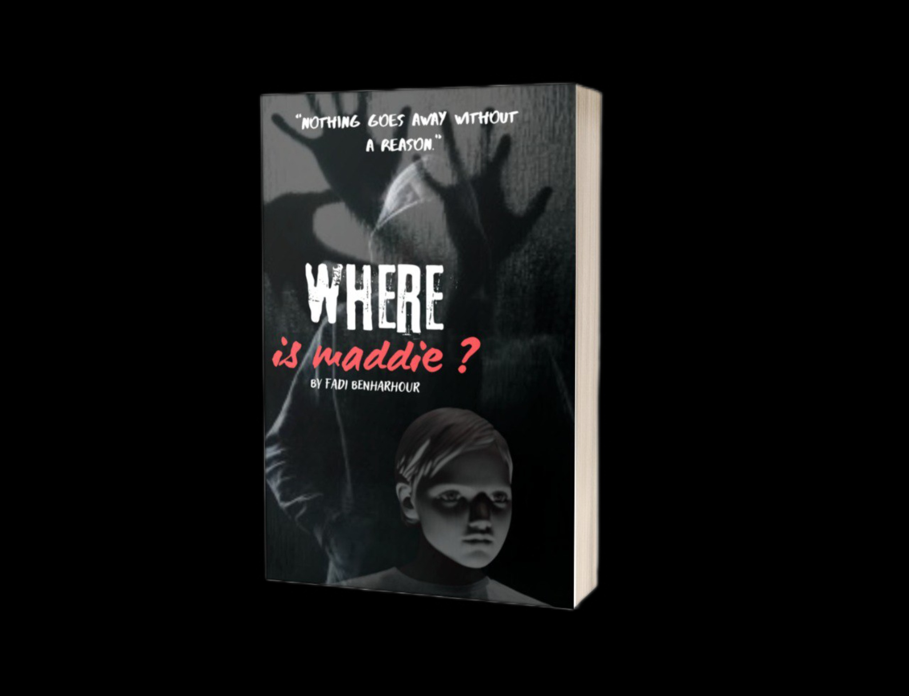

"Nothing goes away without a reason."
A terrifying mystery begins when Maddie suddenly disappears... Months later, Kelly discovers a doll that looks exactly like her missing sister. What starts as a simple search turns into a nightmare filled with secrets and a truth darker than anyone could imagine.
⚠ Warning: This story contains disturbing scenes and dark psychological themes.